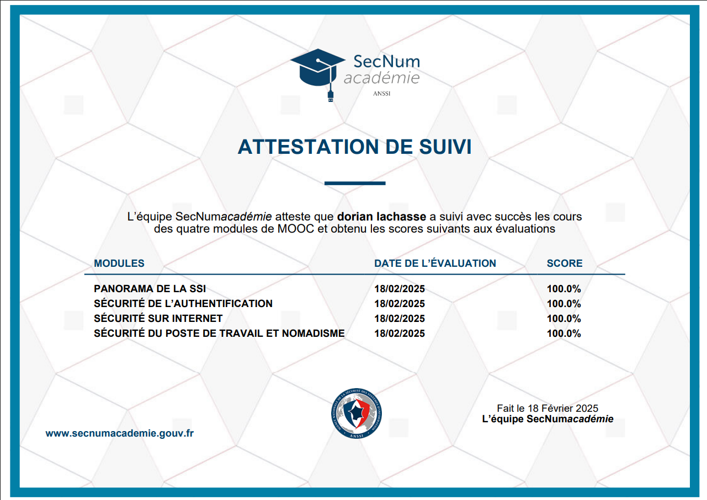

Certifications
Certifications et parcours d’apprentissage (cybersécurité, réseaux, Linux, web).

🛡️
ANSSI
Certification / Attestation ANSSI
Cybersécurité — sensibilisation / bonnes pratiques
Validation des fondamentaux de la cybersécurité : hygiène informatique, authentification, sécurité Internet et sécurité du poste de travail.
- Panorama de la SSI
- Sécurité de l’authentification
- Sécurité sur Internet
- Sécurité du poste de travail et nomadisme

🎯
TryHackMe
Parcours cybersécurité
Labs / Rooms — pratique offensive & défensive
Parcours d’apprentissage cybersécurité orienté pratique avec des laboratoires interactifs : Linux, réseau, sécurité web et méthodologie d’analyse.
- Découverte Linux
- Introduction réseau
- Initiation cybersécurité
- Analyse et résolution de challenges